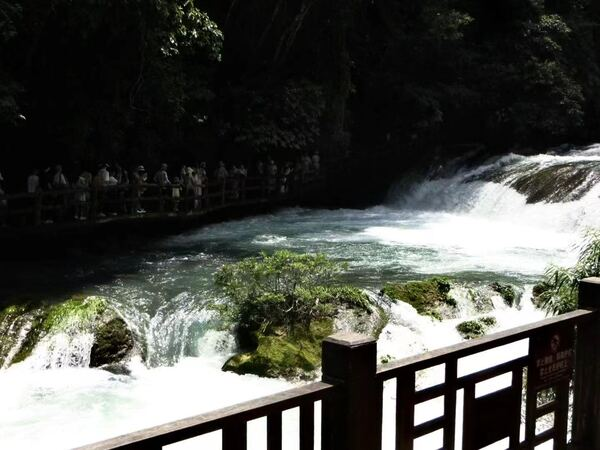
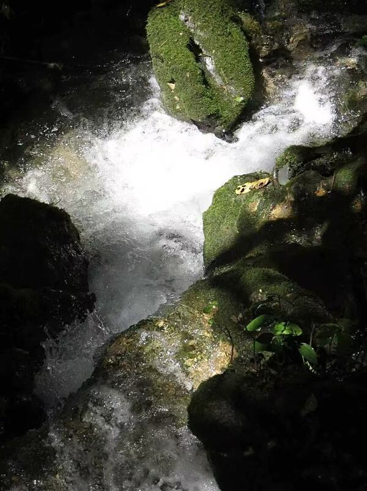
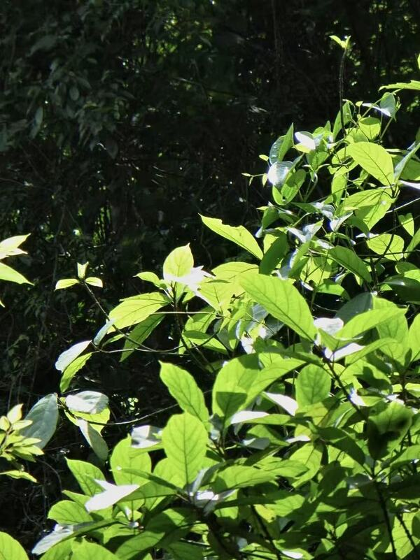
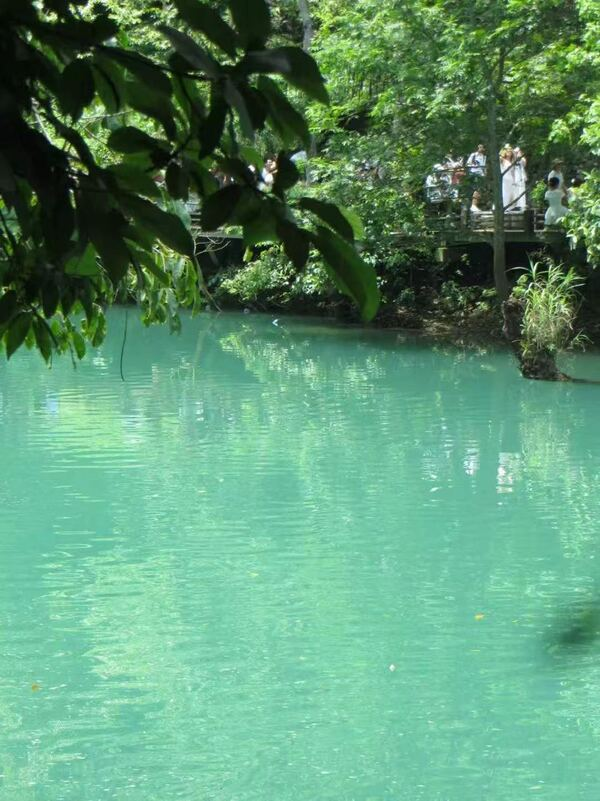

My name is Wanbing Lin, and I am a Media and Cultural Studies student at the University of California, Riverside. Originally from Fuzhou, China, I am interested in photography, visual storytelling, and the relationship between media and everyday life. I enjoy noticing small details that people might otherwise overlook, from expressions and gestures to the colors and textures of a city. Through my studies and personal creative activities, I am exploring how images can communicate experiences, preserve memories, and connect people across different cultural backgrounds.
My interest in photography comes from a desire to capture the atmosphere of a moment. I am especially drawn to CCD and film photography because I enjoy their distinctive colors, textures, and sense of nostalgia. When taking photographs, I look for details that tell a story about a place or person. A street corner, a shared meal, or a quiet moment during a trip can become meaningful through framing and perspective. I want to continue developing my understanding of composition, lighting, and visual narrative while building a collection of photographs that reflects my personal point of view.
Before transferring to UCR, I studied at the University of the Pacific, where I explored media and creative communication. Adapting to different academic environments has encouraged me to become more independent and open to unfamiliar ideas. As an international student, I also think about how language and cultural context influence the way people interpret messages. My coursework gives me opportunities to examine films, discuss representation, and consider how media shapes our understanding of identity and society. These experiences help me approach creative work with curiosity and greater attention to the people and perspectives behind an image.
Travel is another important source of inspiration for me. Spending time in different cities allows me to observe local routines, architecture, fashion, and public spaces. During my Korean language studies at Yonsei University, I met classmates from different countries and experienced daily life in Seoul. These interactions deepened my interest in documenting cultural experiences through photography. I enjoy looking back at travel photographs because they remind me of conversations, friendships, and feelings that might otherwise fade. I hope to create visual stories that communicate those connections while respecting the individuality of the people and places involved.
Outside the classroom, I enjoy dance, music, and exploring creative forms of expression. Dance has made me more attentive to movement, rhythm, and emotion, which also influence how I think about visual storytelling. I am currently learning basic HTML and CSS to build this portfolio and present my work online. My goal is to keep improving my photography and media skills through practice, coursework, and collaboration. In the future, I hope to pursue opportunities in photography, digital media, or creative content production. This website is a space to share my developing interests, reflect on what I learn, and gradually build a portfolio that represents my growth as a student and creator.
• Assisted with new media content planning for projects involving exhibition organizations.
• Wrote scripts for short-form videos.
• Assisted with on-site coordination during filming.
• Provided support with post-production video editing.
• Created and edited videos for course assignments.
• Combined footage, sound, and text to communicate ideas through digital media.
• Analyzed media content and explored techniques for visual storytelling.
• Practiced photography through course assignments and creative exercises.
• Explored composition, lighting, and camera angles to develop visual stories.
• Selected photographs for class projects and reflected on creative choices.



